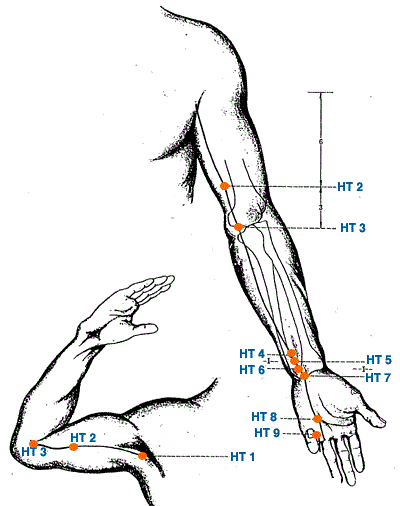

|

|
Meridian Point : HT-1
Location: In the center of the axilla on the radial side of the axillary artery.
English Name: Highest Spring
Pinyin Name: Ji Quan
Actions & Effect:
Regulate Qi flow from the torso to the arm and vice versa - cold, numbness, pain in shoulder a/or arm.
Pain in the cardiac region - heart pain, chest pain, shortness of breath, anxiety, palpitations.
Frozen shoulder.
Pain a/or distention of the upper thoracic area.
Disease
Chest congestion, shortness of breath, emotional problems, dry mouth, terrible thirst, yellowish eyes
Meridian Point : HT-2
Location: With the elbow flexed, 3 cun above HT 3 on the ulnar side of the biceps brachii in the medial groove.
English Name: Cyan Spirit
Pinyin Name: Qing Ling
Actions & Effect:
Local point - in many classics needling this point is contraindicated. Moxabustion, however, is applicable.
Pain in the shoulder or arm.
Pain in the lateral chest and/or hypochondriac regions.
Disease
Cardiac pain, sudden loss of voice
Meridian Point : HT-3
Location: With the elbow flexed, between the ulnar end of the cubital crease and the medial epicondyle of the humerus.
English Name: Lesser Sea
Pinyin Name: Shao Hai
Actions & Effect:
Pain, numbness, tremors, etc. of the lower arms a/or hands - Parkinson's, stroke.
Good local point to move the Qi and Blood.
Spirit disorders from phlegm a/or heat etiologies - epilepsy, depression, anxiety, nervousness, poor memory, fuzzy thinking.
Water Point - redness of the eyes, mouth ulcerations.
Disease
Angina pectoris, amnesia, susceptility to laugh, mania, epilepsy, numbness of arm, tremor of hand, headache, dizziness
Meridian Point : HT-4
Location: 1.5 cun above the wrist crease on the radial side of the flexor carpi ulnaris tendon, on the HT 3 - HT 7 line.
English Name: Spirit Pathway
Pinyin Name: Ling Dao
Actions & Effect:
Sudden loss of voice.
Restless Zang Disorder (fluctuating emotions, mania, depression, anxiety, insomnia), various emotional disturbances.
Chest pain that perhaps worsens with emotional distress.
Local point for pain in the elbow and/or arm.
Disease
Angina pectoris, palpitation, susceptility to laugh, sorrow and fright, stiffness of the tongue
Meridian Point : HT-5
Location: 1 cun above the wrist crease on the radial side of the flexor carpi ulnaris tendon, on the HT 3 - HT 7 line.
English Name: Connecting Li
Pinyin Name: Tong Li
Actions & Effect:
Speech a/or vocal disorders - aphasia (post-stroke), stiff tongue, stuttering, sudden loss of voice, sore throat.
Spirit disorders and related physical manifestations, anxiety w/palpitations, arrhythmia, nervousness, depression - although the point is generally not used for emotional disorders involving sleep such as insomnia, HT 7 is used more often for these more "physical" manifestations.
Excessive bleeding w/ menstruation from heat in the Blood.
Heat effecting the SI and leading to urinary symptoms - incontinence, enuresis.
Local point for wrist, elbow and/or hand pain - perhaps more so for weakness than simple pain.
Disease
Palpitation, Sudden loss of voice, stiffness of the tongue,
Meridian Point : HT-6
Location: .5 cun above the wrist crease on the radial side of the flexor carpi ulnaris tendon, on the HT 3 - HT 7 line.
English Name: Yin Cleft
Pinyin Name: Yin Xi
Actions & Effect:
Night sweats, Steaming Bone Disorders, tonify Yin and Blood. Often used with SI 3 for nightsweats.
Acute chest and/or heart pain from Blood stasis. Palpitations, although HT 5 may be better.
Acute emotional disturbances - mania, anxiety, shock, sudden loss of voice.
Counterflow qi - panic attacks, vomiting blood, nosebleeds.
Disease
Cardiac pain, palpitation due to fright, sudden loss of voice, fever and night sweat
Meridian Point : HT-7
Location: At the wrist crease, on the radial side of the flexor carpi ulnaris tendon, between the ulna and the pisiform bones.
English Name: Spirit Gate
Pinyin Name: Shen Men
Actions & Effect:
Tonify deficiencies of the HT Qi, Blood, Yin and Yang.
Emotional issues, especially those with related sleep or thinking manifestations - insomnia, muddled thinking.
Heart and Phlegm fire leading to insomnia, anxiety, mania.
Physical responses to emotional stimuli - anxiety w/palpitations, nausea w/panic a/or fear.
Heart palpitations from any etiology as well as irregular heart beat, pounding heart, angina.
Tong Ren/Tam Healing System: Emotional/Psychological issues, w/PC 7 for sweat problems (too much or too little).
Disease
Amnesia, cardiac pain, palpitations, irritability, chest pain, insomnia, mania, finger numbness
Meridian Point : HT-8
Location: When a loose fist is made where the tip of the little finger rests between the 4th and 5th metacarpal bones.
English Name: Lesser Mansion
Pinyin Name: Shao Fu
Actions & Effect:
HT Fire effecting the SI effecting the UB, heat descending to the lower jiao - incontinence, difficult urination, fungal infections, genital itching.
Channel issues, sore throat, tongue stiffness, pain along the ulnar aspect of the arms.
Heart Qi Deficiency - palpitations, fear, hot palms.
Emotional disorders - although PC 8 may be a better choice.
HT Fire effecting the mouth - ulcers, canker sores, etc. - although PC 7 or PC 8 may be a better choice.
Local point for arm pain, elbow pain, and/or pain in the pinky finger.
Disease
Palpitation, chest pain, spasmodic pain of little finger
Meridian Point : HT-9
Location: .1 cun posterior to the corner of the nail on the radial side of the little finger.
English Name: Lesser Surge
Pinyin Name: Shao Chong
Actions & Effect:
Jing Well Point - clear heat a/or obstruction from the opposite end of the channel, eye pain a/or redness, mouth ulcerations, sores.
Can be bled or needled for emotional disturbances - strong restlessness, anxiety, panic attacks, manic depression, epilepsy, etc.
Restore consciousness - heart attack, stroke.
Emergency heart attack point - strong stimulation.
Fullness below the heart - stagnation, pain a/or distention in the HT area.
Disease
Palpitation, pain in the chest, mania, coma
|